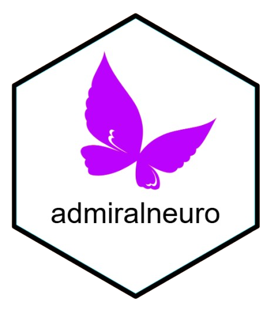

Changelog
Source:NEWS.md
admiralneuro 0.1.0
CRAN release: 2025-09-14
- Initial package release mainly focused on Alzheimer’s disease specifically for the PET scan analysis.
Functions
- The function
compute_centiloid()computes centiloid values based on Amyloid PET tracer, SUVR value and pipeline, and reference region. (#21)
Documentation
- Vignette “Creating ADAPET and ADTPET”. (#19)